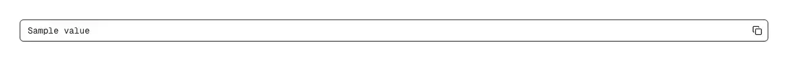

Read-only field that shows a value with a copy button docked at its right edge: one click copies, and focusing or clicking anywhere in the field selects the whole value. Use it wherever a generated string is read once and copied — an API key or secret, an access token, a client ID and client secret, a database connection string, an invite or share link, a webhook or callback URL, a license key, recovery or backup codes, a referral code, a wallet address, an account, order or transaction ID, an ngrok or preview URL, the CLI command your onboarding tells the user to run. Common asks it answers: 'copy to clipboard input react', 'readonly input with copy button', 'input with copy button shadcn', 'copy field component', 'api key field react', 'display api key with copy button', 'secret token field react', 'show connection string with copy', 'invite link copy component', 'share link input with copy', 'webhook url field react', 'select all text on focus react', 'select input value on click', 'react copy to clipboard component', 'react-copy-to-clipboard alternative', 'copy button next to text input', 'navigator.clipboard undefined', 'clipboard.writeText not working localhost', 'copy fails inside iframe', 'copy to clipboard without https', 'shadcn copy input', 'next.js copy field'. Select-on-focus is the part that matters and the part hand-rolled versions leave out: navigator.clipboard.writeText rejects on an insecure origin, inside a sandboxed iframe, or when the document is not focused, and a copy button that swallows that error leaves the user with a value they cannot get out of the box. Here the whole value is already selected, so Ctrl/Cmd+C works, and it is reachable from the keyboard because focus alone selects it. The button announces itself properly too — it composes pulld's copy-button, so its accessible name flips between "Copy to clipboard" and "Copied", a polite live region says "Copied" for a screen reader, the icon is aria-hidden, and the copied state reverts after a timeout you can set. The field renders in monospace so an O and a 0 are distinguishable, forwards a ref so you can focus it from a shortcut, and takes an aria-label (default "Copyable value"). Official shadcn/ui has no copy field: its input-group is an assembly kit of six parts (InputGroup, InputGroupAddon, InputGroupButton, InputGroupText, InputGroupInput, InputGroupTextarea) that pulls in button, input and textarea and contains no clipboard call, no read-only handling and no selection behaviour — you would be writing all of the above yourself. Two files, no npm dependencies, shadcn tokens, dark mode included.

Rendered on the shadcn default neutral palette with harness-generated props.
pnpm dlx shadcn@4.21.0 add @pulld/copy-field
| licence | POINTER |
|---|---|
| primitive base | none |
| type | registry:ui |
| files | src/components/ui/copy-field.tsx |
| npm deps pulled | none beyond the pre-installed peer set |
| registry deps | https://pulld.pages.dev/r/copy-button.json |
| semantic / palette / hex | 2 / 0 / 0 |
| writes shared ui/ | yes — can overwrite the project’s own primitives |